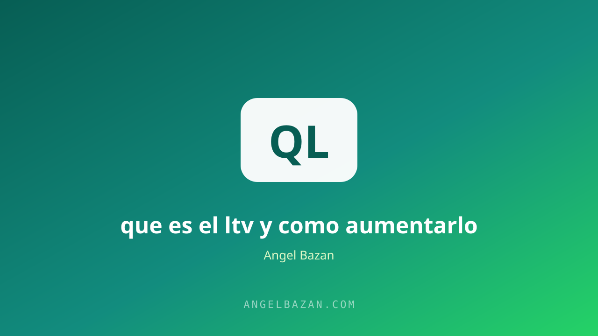

LTV: qué es el valor de vida del cliente y cómo aumentarlo
Si solo miras la primera venta, pagas caro cada cliente nuevo. El LTV te dice cuánto puedes invertir para ganar clientes rentables.
En este artículo
El LTV (Lifetime Value) es el valor de vida del cliente: el dinero total que un cliente te deja durante toda la relación comercial. Es la métrica que separa a los negocios que sobreviven de los que quiebran pagando cada vez más por clientes nuevos. Un negocio con LTV alto puede pagar más por cada cliente y volverse difícil de competir.

Muchos emprendedores solo miden la primera venta y con eso deciden si una campaña funciona. El problema: la primera venta suele ser la menos rentable. La rentabilidad real está en lo que ese cliente compra después. Aquí verás cómo calcularlo y cómo hacerlo crecer.
Qué es el LTV
El LTV multiplica el ticket promedio por la frecuencia de compra y por el tiempo que el cliente permanece contigo. No es un número fijo: es un objetivo que mejora con cada estrategia de retención, recompra y aumento de ticket. Las métricas hermanas que lo complementan están en ROAS vs ROI y en qué es el costo por adquisición.
También puedes calcularlo con el margen de contribución, para saber no solo cuánto factura un cliente, sino cuánto deja de ganancia. Ese es el número que debes comparar contra tu inversión en anuncios.
Por qué importa más que la primera venta
Si un cliente vale 50 soles de por vida, no puedes gastar 30 en captarlo. Si vale 2.000, tu competencia no puede competir contigo por ese cliente, porque tú puedes pagar más por él. La primera venta crea el flujo; el LTV crea el negocio. Las marcas que crecen de verdad no buscan compradores únicos, buscan relaciones.
Con el LTV claro, el marketing deja de ser un gasto y se vuelve una inversión con retorno predecible: sabes cuánto puedes pagar por captar a un cliente que te devolverá cinco veces ese valor. Las empresas que crecen compran clientes; las que solo sobreviven compran visitas.
Cómo calcular el LTV
LTV = Ticket promedio × Frecuencia de compra al año × Años que el cliente se queda. Ejemplo: 200 soles por compra, 3 compras al año y 2 años de permanencia = 1.200 soles de LTV. Comparado contra tu costo por adquisición, te dice si cada cliente nuevo es una inversión o un gasto. La cuenta exacta la haces en nuestra calculadora de CPL y ROAS.
Si no tienes historial, usa datos de referencia de tu industria o empieza conservador con la frecuencia y el ticket de los primeros meses; el número se ajusta a medida que tu base de clientes madura.
7 estrategias para aumentarlo
Las siete estrategias se dividen en tres palancas: subir el ticket, aumentar la frecuencia y alargar la permanencia. Cualquier acción que mejore una de las tres sube tu LTV.
- Aumenta el ticket con order bumps y upsells: más valor en la misma compra. El sistema completo en order bump, upsell y downsell.
- Crece la frecuencia con programas de recompra: suscripciones, packs y reposición automática.
- Mejora la experiencia de entrega: un cliente satisfecho compra antes y recomienda.
- Activa la postventa: un seguimiento que detecta necesidades nuevas.
- Segmenta por comportamiento: promueve a cada cliente lo que realmente le interesa.
- Construye comunidad: el grupo de WhatsApp o la membresía retienen y multiplican.
- Lanza novedades constantes: cada producto nuevo es una razón para recomprar.
- Crea un programa de referidos: el cliente que llega recomendado llega con confianza y mayor permanencia.
- Personaliza la comunicación: segmentar por historial de compra duplica la respuesta de tus campañas de recompra.
El LTV en negocios con WhatsApp
WhatsApp es la herramienta de retención más directa que existe: puedes anunciar novedades, ofrecer soporte y vender seguimientos con un mensaje. Un cliente en tu lista de difusión vale más que uno que solo te encuentra por anuncios. El sistema de conversación automatizada está en automatizar WhatsApp con IA.
El mejor momento para la recompra es cuando el cliente ya tuvo el resultado: ese mensaje que pregunta cómo le fue y ofrece el siguiente paso convierte más que cualquier anuncio frío.
Preguntas frecuentes
¿Cuál es un buen LTV? El que sea al menos 3 veces tu costo de adquisición; por debajo de eso, cada cliente nuevo resta rentabilidad.
¿Cómo aumento el LTV en un producto de compra única? Con upsells, versiones nuevas, membresía o programas de referidos: el valor de vida se construye, no se descubre.
¿El LTV aplica a servicios? Sí: el ticket y la frecuencia de contratación definen cuánto puedes invertir en captar cada cliente.

Angel Bazán
Especialista en funnels, Meta Ads y WhatsApp + IA. Ayudo a negocios a vender más combinando tráfico pagado con conversaciones automatizadas.
Conoce más sobre mí →Aprende a crear y vender productos digitales con Meta Ads, WhatsApp e IA
Clases en vivo, estrategias y recursos para construir tu sistema desde cero. 🚀
Únete gratis al grupo